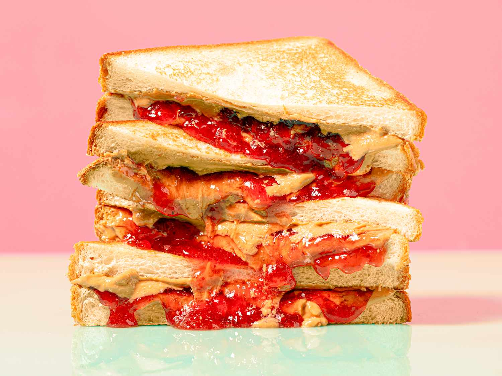

Lab 4 - Pseucoding
Challenge
We are supposed to pseucode an everyday task and a simple computer game, and turn it into comments.
Problems
I struggled at first because I wasn't sure I completely understood the assignment but once I figured it out it was smooth sailing from there.
Reflection
I found this assignment to be a bit more challenging than the rest of the labs we've done in class but I am very proud of my work and execution.
Results
I was able to pseucode an everyday task and a computer game and you can see it here in my lab.
How to make a PB & J Sandwich

Instructions:
1.Grab a paper plate 2.Grab white bread package 3.Grab peanut butter jar 4.Grab raspberry jelly jar 5.Untwist bread bag package 6.Open bread bag and remove two slices 7.Place slices on paper plate 8.Open peanut butter jar 9.Grab a plastic knife 10.Use knife to scoop out peanut butter 11.Apply peanut butter to one slice of bread 12.Spread peanut butter on slice 13.Place knife on plate 14.Close peanut butter jar 15.Open jelly jar 16.Use knife to scoop out jelly onto second bread slice 17.Spread jelly on slice 18.Close jelly bottle 19.Place knife on plate 20.Bring the two slices of bread together 21.Grab knife and cut slices in half down the middle 22.Throw knife in the trash 23.Pick up one half of sandwich Eat and Enjoy!
Comments
// PB&J
// Instructions on how to make a PB&J.
// Author: Saraí Munoz.
// Date: 4/20/25.
//How to make a PB & J Sandwich:
// Grab a paper plate
// Grab white bread package
// Grab peanut butter jar
// Grab raspberry jelly jar
// Untwist bread bag package
// Open bread bag and remove two slices
// Place slices on paper plate
// Open peanut butter jar
// Grab a plastic knife
// Use knife to scoop out peanut butter
// Apply peanut butter to one slice of bread
// Spread peanut butter on slice
// Place knife on plate
// Close peanut butter jar
// Open jelly jar
// Use knife to scoop out jelly onto second bread slice
// Spread jelly on slice
// Close jelly bottle
// Place knife on plate
// Bring the two slices of bread together
// Grab knife and cut slices in half down the middle
// Throw knife in the trash
// Pick up one half of sandwich
// Eat and Enjoy
How to Play Rock Paper Scissors

Rules:
Find a partner Stand facing each other Both players make a fist with one hand Together say: “Rock, Paper, Scissors, Shoot!” On “Shoot,” both players reveal one of the three hand signs: Rock = closed fist Paper = flat hand Scissors = two fingers (like a V) See who won: Rock crushes Scissors cissors cuts Paper Paper covers Rock If both players choose the same sign, it's a tie (go again) Play best 2 out of 3 (optional) Have fun and play fair!
Comments
// Rock Paper Scissors
// Instructions on how to play Rock, Paper, Scissors
// Author: Saraí Munoz.
// Date: 4/20/25.
// Find a partner
// Stand facing each other
// Both players make a fist with one hand
// Together say: “Rock, Paper, Scissors, Shoot!”
// On “Shoot,” both players reveal one of the three hand signs:
// Rock = closed fist
// Paper = flat hand
// Scissors = two fingers (like a V)
// See who won:
// Rock crushes Scissors
// Scissors cuts Paper
// Paper covers Rock
// If both players choose the same sign, it's a tie (go again)
// Play best 2 out of 3 (optional)
// Have fun and play fair!
// END